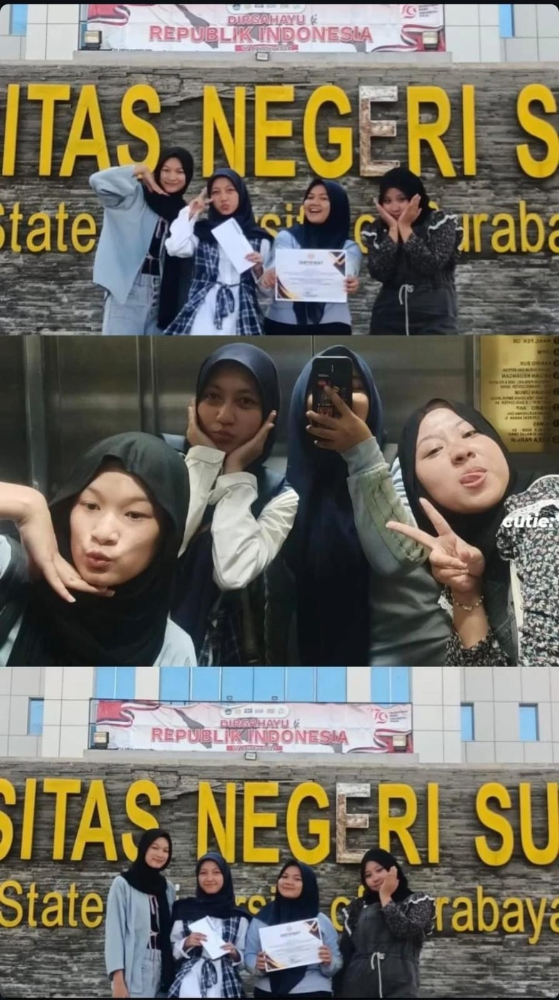
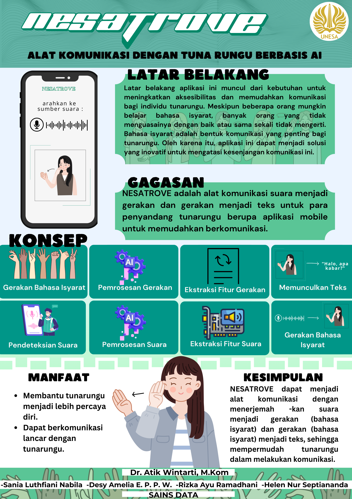
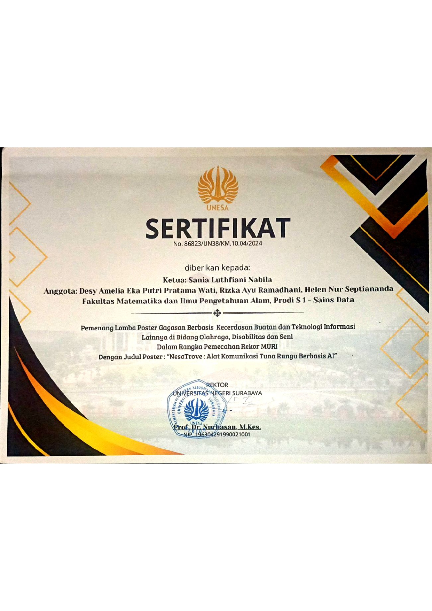
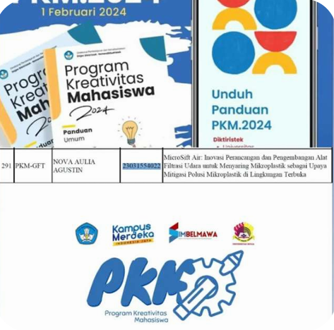
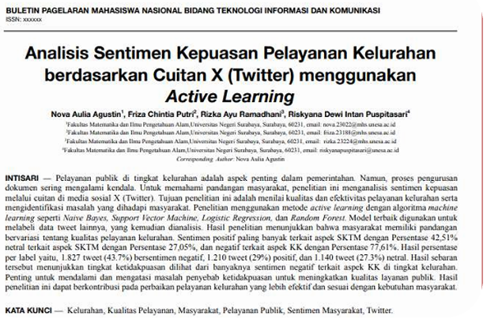
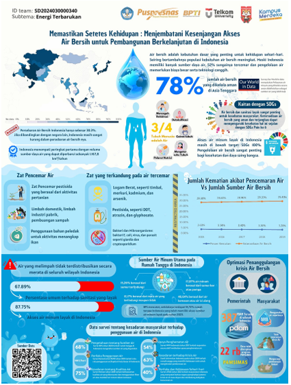
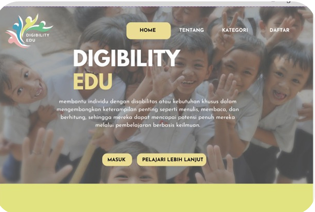

Selected Projects
Click any project card to see full details, documentation, and source code

SISTEM CASH NEST - (PENCATATAN KEUANGAN)
A Streamlit-based application designed to record, manage, and monitor financial transactions, helping users track income and expenses in a simple and structured way.

APLIKASI ANTRIAN BANK USE PRIORITY QUEUE
A web-based queue management application developed using Streamlit, implementing the Priority Queue data structure to simulate a bank service system.

Pro Navigator: A Comparative Analysis of Uniform Cost Search Dijkstra and Greedy Algorithms for Fastest Route Search Between Cities and Regions in East Java
Pro Navigator is a desktop-based route optimization application developed using Python and Tkinter to determine the fastest route between cities and regions in East Java. The system applies Uniform Cost Search (Dijkstra’s Algorithm) and Greedy algorithms to solve the shortest path problem within a weighted graph structure.

Mining Analysis And Comparison Of User Sentiments On Platform X (Twitter) And Google Maps Regarding Universitas Negeri Surabaya
This project analyzes and compares user sentiments toward Universitas Negeri Surabaya on Platform X (Twitter) and Google Maps using text mining and machine learning techniques. The goal is to identify sentiment patterns and differences in public perception across both platforms.

Design of an Integrated Information System for Clinic Management Based on Database to Improve Service Delivery
KhitanXpress is a database-based clinic management information system designed to support patient data management, scheduling, and administrative processes to improve service efficiency and quality.

Cleanify Pro: Audio Quality Enhancement Innovation Using Noise Reduction Technology Based On Finite Impulse Response (Fir) With Low-Pass Filter
Cleanify Pro is a digital signal processing project that enhances audio quality by reducing noise using a Finite Impulse Response (FIR) Low-Pass Filter, ensuring clearer audio while preserving the main signal.

Classifier Pro: Customer Classification Analysis Using Random Forest Algorithm On Company Data
Classifier Pro is a machine learning project that applies the Random Forest algorithm to classify customers based on company data, helping generate insights that support data-driven business decisions.

Comparative Analysis of MANOVA and MANCOVA on Heart Disease Risk Factors Using the Heart Disease Dataset
This project compares MANOVA and MANCOVA methods to analyze heart disease risk factors using multivariate statistical techniques and the Heart Disease dataset, aiming to understand how different analytical approaches influence the interpretation of health-related data

Implementation of Distributed Computing for OLAP Query Execution on the COVID-19 Counties Dataset Using Celery and RabbitMQ
This project implements distributed computing using Celery and RabbitMQ to execute OLAP queries on the COVID-19 Counties dataset, demonstrating how distributed processing can improve performance in data warehouse analytics.

Development of a Digital Application for Event and Volunteering Participation Based on Interests and Location
This project presents the UI/UX design of a digital platform that helps users find and participate in events and volunteering activities based on their interests and location, emphasizing user-centered design principles in human–computer interaction.

Implementation of Market Basket Analysis, Customer Segmentation, and Seasonal Analysis to Improve Retail Sales Strategy
This project applies data mining techniques, including Market Basket Analysis, Customer Segmentation, and Seasonal Analysis, to identify purchasing patterns and customer behavior in retail data, helping improve data-driven sales strategies.

Application of Machine Learning for Clustering, Classification, and Regression on the Olist E-Commerce Dataset
This project applies machine learning techniques including clustering, classification, and regression on the Olist E-Commerce dataset to analyze patterns and generate insights from real-world e-commerce data.

Heart Wall Segmentation Analysis on Cardiac Ultrasound Images Using Frame Differencing, Adaptive Thresholding, and Morphological Operations
This project applies digital image processing techniques to segment heart wall structures from cardiac ultrasound images using frame differencing, adaptive thresholding, and morphological operations.
SISTEM CASH NEST - (PENCATATAN KEUANGAN)
A Streamlit-based application designed to record, manage, and monitor financial transactions, helping users track income and expenses in a simple and structured way.
APLIKASI ANTRIAN BANK USE PRIORITY QUEUE
A web-based queue management application developed using Streamlit, implementing the Priority Queue data structure to simulate a bank service system.
Pro Navigator: A Comparative Analysis of Uniform Cost Search Dijkstra and Greedy Algorithms for Fastest Route Search Between Cities and Regions in East Java
Pro Navigator is a desktop-based route optimization application developed using Python and Tkinter to determine the fastest route between cities and regions in East Java. The system applies Uniform Cost Search (Dijkstra’s Algorithm) and Greedy algorithms to solve the shortest path problem within a weighted graph structure.
Mining Analysis And Comparison Of User Sentiments On Platform X (Twitter) And Google Maps Regarding Universitas Negeri Surabaya
This project analyzes and compares user sentiments toward Universitas Negeri Surabaya on Platform X (Twitter) and Google Maps using text mining and machine learning techniques. The goal is to identify sentiment patterns and differences in public perception across both platforms.
Design of an Integrated Information System for Clinic Management Based on Database to Improve Service Delivery
KhitanXpress is a database-based clinic management information system designed to support patient data management, scheduling, and administrative processes to improve service efficiency and quality.
Cleanify Pro: Audio Quality Enhancement Innovation Using Noise Reduction Technology Based On Finite Impulse Response (Fir) With Low-Pass Filter
Cleanify Pro is a digital signal processing project that enhances audio quality by reducing noise using a Finite Impulse Response (FIR) Low-Pass Filter, ensuring clearer audio while preserving the main signal.
Classifier Pro: Customer Classification Analysis Using Random Forest Algorithm On Company Data
Classifier Pro is a machine learning project that applies the Random Forest algorithm to classify customers based on company data, helping generate insights that support data-driven business decisions.
Comparative Analysis of MANOVA and MANCOVA on Heart Disease Risk Factors Using the Heart Disease Dataset
This project compares MANOVA and MANCOVA methods to analyze heart disease risk factors using multivariate statistical techniques and the Heart Disease dataset, aiming to understand how different analytical approaches influence the interpretation of health-related data
Implementation of Distributed Computing for OLAP Query Execution on the COVID-19 Counties Dataset Using Celery and RabbitMQ
This project implements distributed computing using Celery and RabbitMQ to execute OLAP queries on the COVID-19 Counties dataset, demonstrating how distributed processing can improve performance in data warehouse analytics.
Development of a Digital Application for Event and Volunteering Participation Based on Interests and Location
This project presents the UI/UX design of a digital platform that helps users find and participate in events and volunteering activities based on their interests and location, emphasizing user-centered design principles in human–computer interaction.
Implementation of Market Basket Analysis, Customer Segmentation, and Seasonal Analysis to Improve Retail Sales Strategy
This project applies data mining techniques, including Market Basket Analysis, Customer Segmentation, and Seasonal Analysis, to identify purchasing patterns and customer behavior in retail data, helping improve data-driven sales strategies.
Application of Machine Learning for Clustering, Classification, and Regression on the Olist E-Commerce Dataset
This project applies machine learning techniques including clustering, classification, and regression on the Olist E-Commerce dataset to analyze patterns and generate insights from real-world e-commerce data.
Heart Wall Segmentation Analysis on Cardiac Ultrasound Images Using Frame Differencing, Adaptive Thresholding, and Morphological Operations
This project applies digital image processing techniques to segment heart wall structures from cardiac ultrasound images using frame differencing, adaptive thresholding, and morphological operations.
Certified & Verified Skills
View Credential →
View Credential →
Credential
Recognition & Awards



Key Milestones
Internal Selection Qualifier – Student Creativity Program (PKM-GFT) 2024
Project Title: MicroSift Air: Innovation in the Design and Development of an Air Filtration Device to Filter Microplastics as an Effort to Mitigate Microplastic Pollution in Open Environments.

Internal Selection Qualifier – GEMASTIK 2024 (Data Mining Division)
Project: Sentiment Analysis of Public Satisfaction with Village Administrative Services Based on X (Twitter) Posts Using Active Learning.

Internal Selection Qualifier – Satria Data 2024, Statistics Infographics Competition (SIC)
Infographic: Ensuring a Drop of Life: Bridging the Clean Water Access Gap for Sustainable Development in Indonesia.

Internal Selection Qualifier – DIMAS-TI 2024, Digital Business Innovation Division
Project: Development of an inclusive learning system for people with disabilities.

Internal Selection Qualifier – Student Creativity Program (PKM-GFT) 2024
Project Title: MicroSift Air: Innovation in the Design and Development of an Air Filtration Device to Filter Microplastics as an Effort to Mitigate Microplastic Pollution in Open Environments.
Internal Selection Qualifier – GEMASTIK 2024 (Data Mining Division)
Project: Sentiment Analysis of Public Satisfaction with Village Administrative Services Based on X (Twitter) Posts Using Active Learning.
Internal Selection Qualifier – Satria Data 2024, Statistics Infographics Competition (SIC)
Infographic: Ensuring a Drop of Life: Bridging the Clean Water Access Gap for Sustainable Development in Indonesia.
Internal Selection Qualifier – DIMAS-TI 2024, Digital Business Innovation Division
Project: Development of an inclusive learning system for people with disabilities.
Download My Full CV
Available in PDF format, ready to share with recruiters or collaborators
⬇ Download CV — PDFLet's Collaborate
I'm ready to hear your ideas
Whether a project, job opportunity, or just a discussion about data — I'm always open to new conversations.